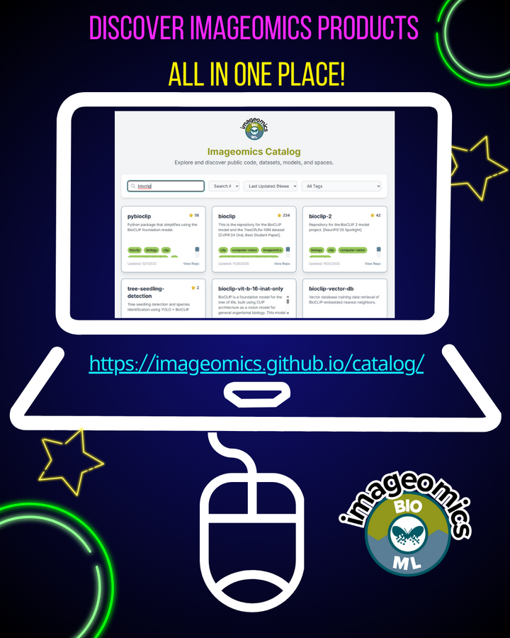

If last week’s Cyber Specials slipped past you, there’s good news - Imageomics just rolled out something even better. The Imageomics Catalog is now live, bringing together an impressive collection of public code, datasets, models, and spaces, all in one easy-to-explore hub.
Designed to accelerate research at the intersection of artificial intelligence and biology, the catalog highlights cutting-edge tools such as BioClip 2, KABR and the TreeOfLife-toolbox. Whether you’re building new models, exploring biological patterns, or contributing to open science infrastructure, this catalog offers a centralized gateway to the tools shaping the future of AI for biology.
“We’re committed to making it easier for people to find our open-source research,” said Elizabeth Camplongo, Imageomics Institute's Senior Data Scientist, underscoring the team’s focus on accessibility, transparency, and community-driven innovation.
Researchers, developers, and scientists across disciplines are invited to dive in, discover what’s available, and learn more about how imageomics tools can help in their researchers.